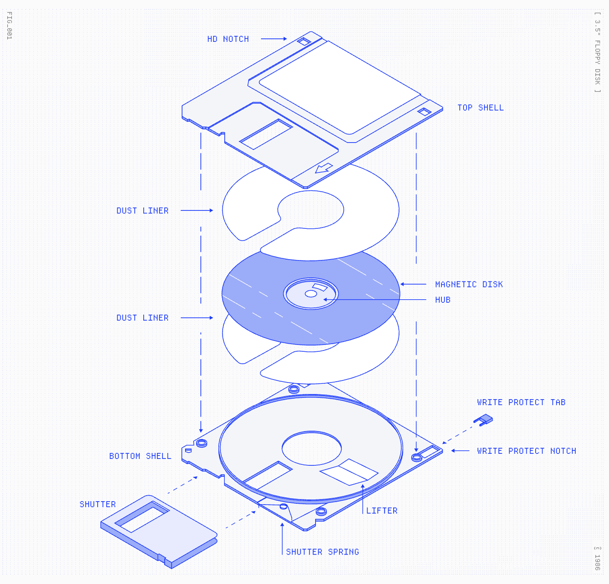

Dan Hollick's website Making Software
is a beautifully illustrated digital novel project aiming to explain the inner workings
of common technologies.
So far, the site hosts a chapters on a couple of different topics with a vast scaffold of future chapters in place. scrolling down reveals the table of contents, which features hover states to indicate if content is available or not. Upon actually clicking on a complete page, the user is taken to a detailed (but still very approachable) paper.

The author opts to use animated SVGs for all of their front page graphics ensuring faster load times, and beautifully
rendered graphics at any size. The whole site seems to be built on the "React" framework.
fun progress bar from the site
Other Cool Features